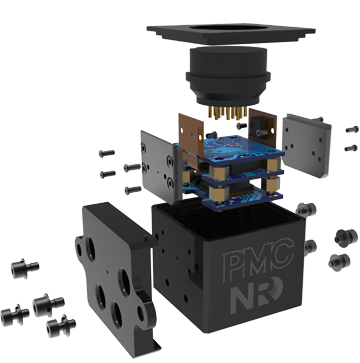
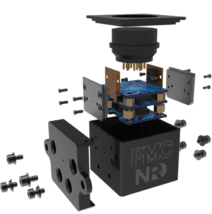
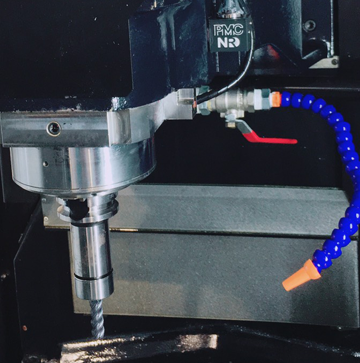

產品介紹
Vi-tex
小體積、大作為
採防水防油多層板內嵌式設計的外殼，感測、計算、數位轉換、防護、自動校正等核心晶片於3cm體積內一應俱全，高速計算的DSP晶片帶來工具機即時偵測真正效益，精巧體積能廣泛用於工具機、機械手臂、主軸監測、自動化設備……等。
快速穩定的訊號
產品兼具高速SPI與長距傳輸RS485相容性，針對工具機需求支援線長10~20m以上高速即時傳輸(Real-Time)，可真正做到即時反饋分析結果給控制器，持續監控加工狀態並提供建議處置，提升檢修與生產效率。
彈性擴充，專屬開發
產品所附後端轉接板支援EtherCAT、Relay、GPI/O等多種功用常見IO，能輕鬆安裝、隨使用者需求擴充連接，並與FANUC、MITSUBISHI等國內常見控制器無痛相容。此外使用者還可根據需求取用產品內建分析演算法，組合搭配、開發出專屬於自家機台產品的智慧化功能，提升設備價值。
Vi-TEX除內建演算開發平台，對於注重產鍊智慧化時效，或無多餘時間資源開發演算法的客戶亦提供了幾種工具機常見核心功能：
撞機紀錄
加工過程中有不當加工致使撞機發生時，能即時觸發回饋並記錄時間，系統除警示與產生log紀錄外，會自動儲存撞機前後之量測原始資料，可供日後調閱分析。
異常振動檢知
無預警的不明振動常為自動化生產帶來困擾，本功能可在加工過程中有超過使用者設定閥值之異常振動時，根據使用者設定之等級，發出警示、閃燈與介面訊息提示，使用者可根據不同加工機台需求，設定不同模式並儲存使用。
動平衡警示
監測主軸於加工過程中是否有動不平衡或偏移，若超過使用者設定之動平衡等級，會根據使用者設定等級警示、閃燈與介面訊息提示，及早避免動不平衡造成不良加工或機台損耗。
 

